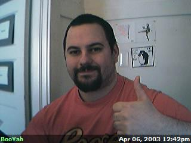

The Y5 Cam is a digital camera linked to one of the many computers in our work room. It's triggered to fire every 2 minutes and post the photograph to this page instantaneously. These photos aren't doctored or monitored in any way, so you might get an eyeful if you're lucky!

<< back
|
|